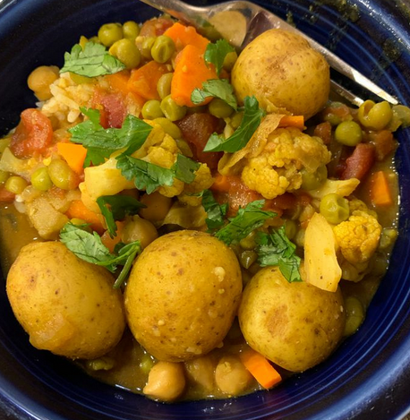

Spicy Vegan Potato Curry Recipe 😊

Description
This vegan potato curry has abundant spices that make this better than any restaurant curry I've tasted.
Ingredients
- 4 potatoes, peeled and cubed
- Vegetable oil - 2 tbsp
- Yellow onion, diced - 1
- Cloves garlic, minced - 3
- Curry powder - 4 tsp
- Garam Masala - 4 tsp
- Ground Cummin - 2 tsp
- Salt - 2 tsp
- 1 in piece of ginger root, peeled - 1
- Cayenne Pepper - 1 1/2 tsp
- Garbanzo Beans, rinsed and drained - 1 Can [15 ounces]
- Peas, drained - 1 Can [15 ounces]
- Tomatoes, diced - 1 Can [14.5 ounces]
- Coconut Milk - 1 Can [14 ounces]
Steps
- Place potatoes into a large pot and cover with salted water. Bring to a boil, then reduce the heat to medium-low, cover, and simmer until just tender, about 15 minutes. Drain and allow to steam dry for 1 to 2 minutes.
- Meanwhile, heat oil in a large skillet over medium heat. Cook and stir onion and garlic in hot oil until onion has softened and turned translucent, about 5 minutes. Season with curry powder, garam masala, cumin, salt, ginger, and cayenne pepper; cook and stir for 2 minutes more.
- Add cooked potatoes, garbanzo beans, peas, and tomatoes, then pour in coconut milk. Bring to a simmer and continue cooking for 5 to 10 minutes.
Source: Recipe Source